Osnovna oprema
Instalacija filtracije, pumpi, mlaznica i skimmera, podnih ispusta i drugih ključnih elemenata za ispravan rad bazena.
Filtri, pumpe, mlazniceInstalacije bazenske tehnike, hidroizolacija i obloga bazenske školjke te redovito održavanje. Uz bazene radimo masažne bazene, saune, klimatizaciju, grijanje i solarne kolektore.
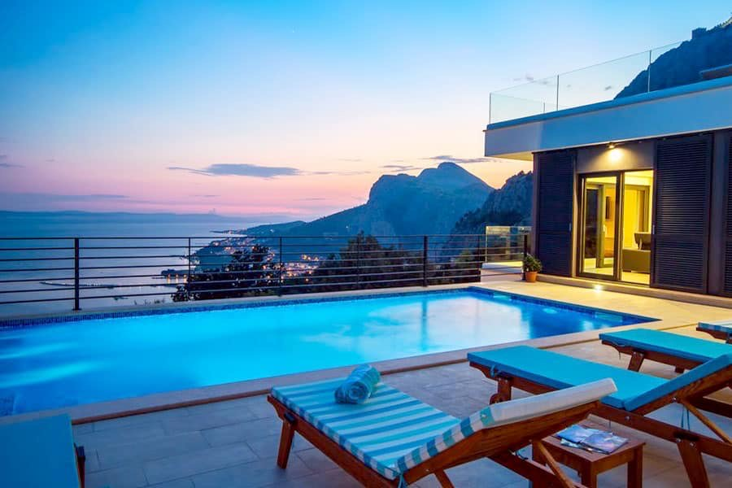
Izvodimo instalacije bazenske tehnike, obradu i oblogu bazenske školjke te održavanje bazena. Dugogodišnje iskustvo naših djelatnika i stalno ulaganje u nove tehnologije, u skladu s europskim standardima.
Instalacija filtracije, pumpi, mlaznica i skimmera, podnih ispusta i drugih ključnih elemenata za ispravan rad bazena.
Filtri, pumpe, mlazniceHidroizolacija školjke i oblaganje staklenim mozaikom ili porculanom, materijalima renomiranih proizvođača.
Mapei, Ezarri, MosavitRedovna njega i čišćenje, kemijski tretman vode, automatska ili ručna dezinfekcija, balansiranje pH te zaštita od algi i kamenca.
Usluge održavanjaVodeni efekti, hidromasaža, protustrujno plivanje, podvodna rasvjeta, pokrivači i roboti za čišćenje.
Efekti i opremaProjektiranje i instalacija grijanja, hlađenja, klimatizacije i ventilacije, dizalice topline, odvlaživači i solarni sustavi.
Klimatizacija i grijanjeSaunske kabine po mjeri prostora: savjet o dimenzijama, drvu, podlozi i snazi peći.
SauneZa svaku namjenu: od jednostavnog i povoljnog skimmerskog bazena, preko preljevnog s vodom u ravnini ruba, do malog masažnog bazena za terasu ili vrt.
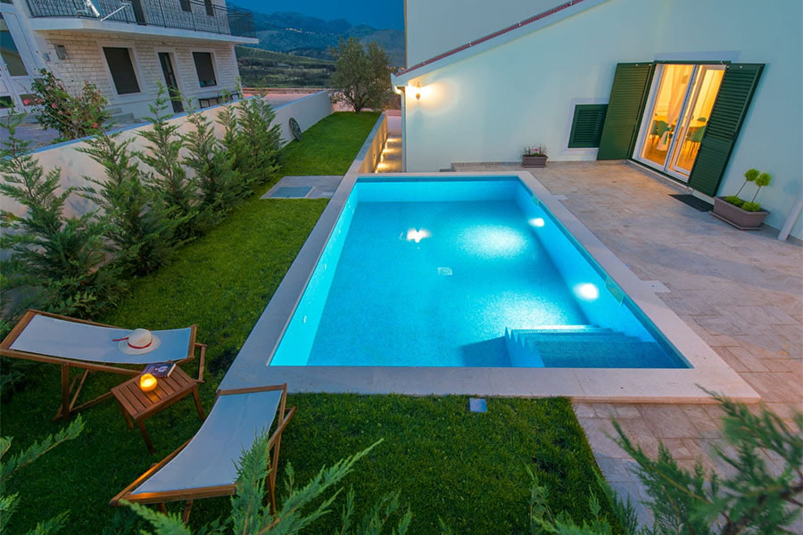
A · Najčešći izborNajčešće za privatnu upotrebu. Izvedba je jeftinija, a održavanje jednostavnije.
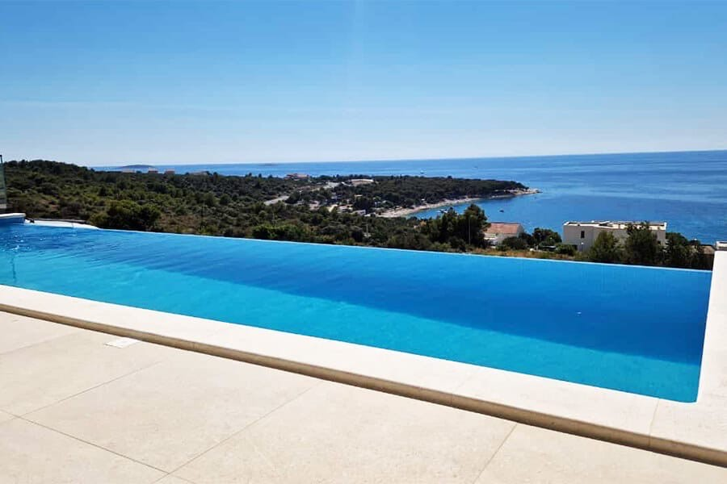
B · Otvoren pogledVoda je u ravnini s rubom i preljeva se u kanal. Kvalitetnija cirkulacija vode.
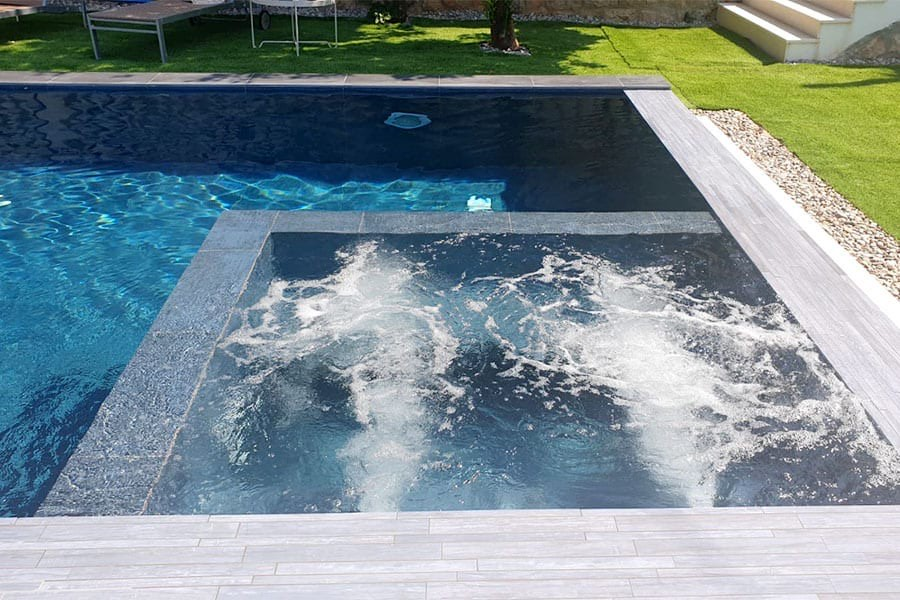
C · Za mali prostorHidromasaža, zračna masaža, gejzir i slapovi. U vrtu, na terasi ili balkonu.
Filtri, skimmeri, stepenice, strojarnica i svi ostali detalji definiraju se unaprijed, prije početka radova.
Definiramo filtre, skimmere, stepenice, strojarnicu i sve ostale detalje.
Na svjetlu, po mogućnosti dalje od šume i visokih stabala zbog lišća i iglica.
Mlaznice se kod skimmerskih bazena postavljaju u zidove prije betoniranja.
Nakon izrade betonske školjke postavlja se hidroizolacija.
Pločice ili stakleni mozaik, zatim vodeni efekti ako ih bazen ima.
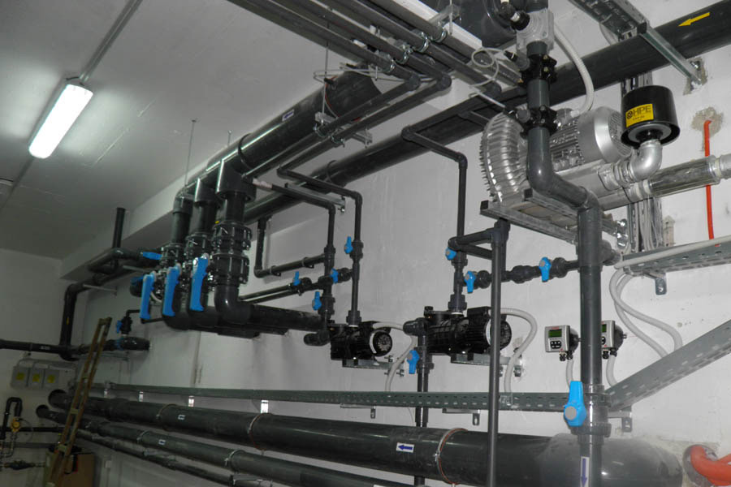
Suha prostorija što bliže bazenu, s cijevnim i strujnim instalacijama postavljenima tako da ostane mjesta za opremu koja se ugrađuje naknadno: grijače, izmjenjivače topline, pumpe za hidromasažu i automatske dozatore.
Kako izvodimo strojarniceveć od, ovisno o vrsti i opremi
skimmerski, preljevni, masažni
dnevno, tjedno, mjesečno, godišnje
kapaciteta kod preljevnih bazena
Pitka voda kojom punimo bazen odgovara tim zahtjevima. No kupači i okoliš donose nečistoće, gljivice i bakterije koje se u vodi brzo razmnožavaju. Zato svaki bazen treba redovito održavanje.
Održavanje bazenaNadražuje sluznicu i oči, uzrokuje koroziju metalnih dijelova i nagriza fuge u bazenskim pločicama.
Idealna pH vrijednost. Sredstva za njegu vode pravilno djeluju, a voda je besprijekorno čista.
Nadražuje kožu i oči, izlučuje se vodeni kamenac, a dezinfekcijska sredstva djeluju puno slabije.
Izbor fotografija iz naše galerije: skimmerski i preljevni bazeni, slapovi, rasvjeta i pogled na more.
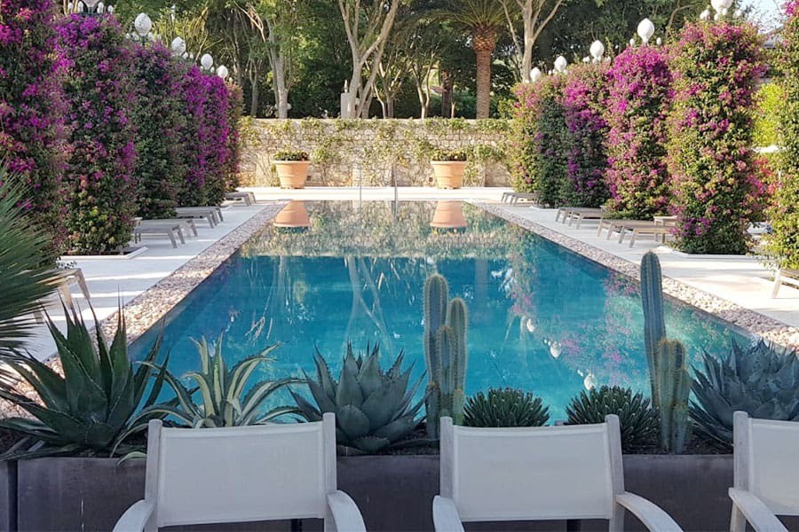
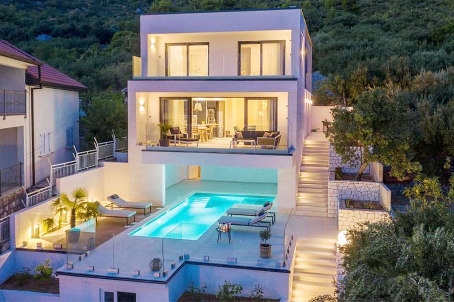
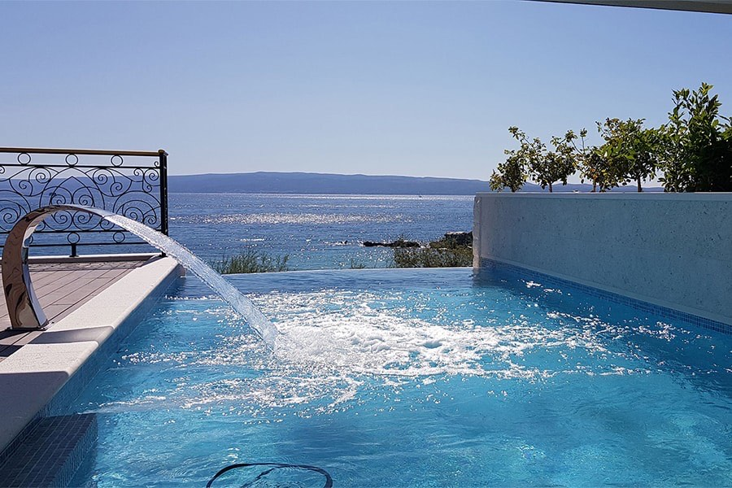
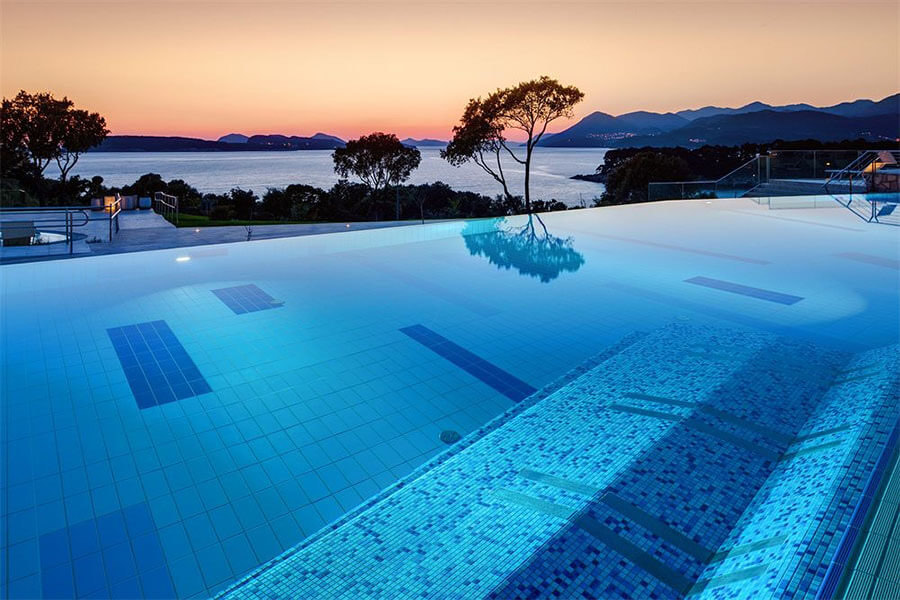

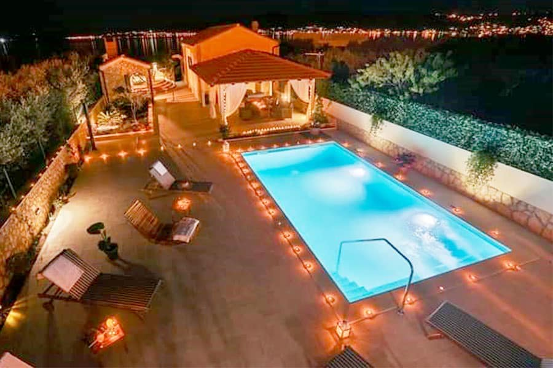
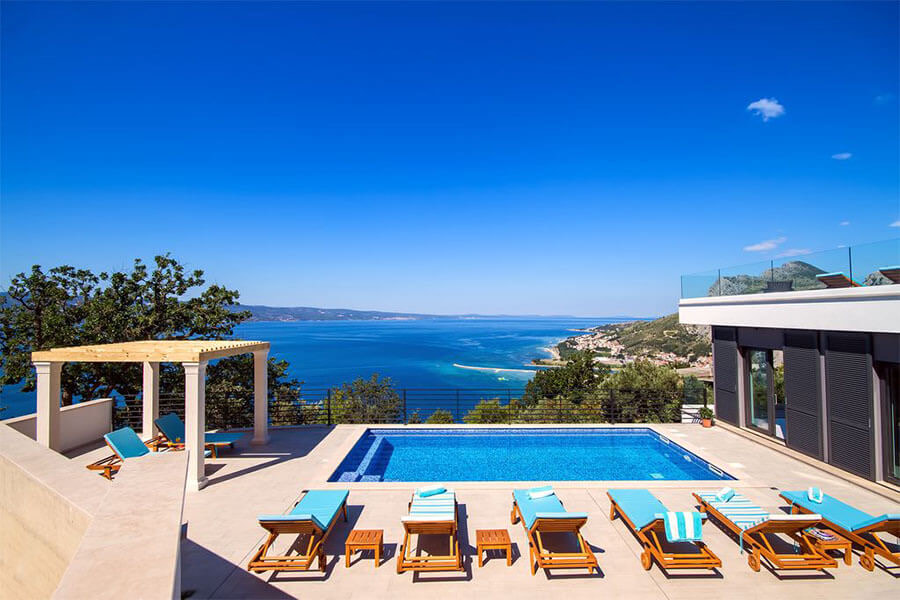
Cijena bazena kreće već od 6.600 €. Konačni iznos ovisi o vrsti bazena, dimenzijama i opremi. Preljevni bazeni imaju složeniju konstrukciju i instalaciju pa su skuplji od skimmerskih. Za točnu ponudu pošaljite upit ili nas nazovite.
Kod skimmerskog bazena voda je desetak centimetara ispod ruba, a površinsku vodu s nečistoćama prihvaćaju skimmeri u zidu. Izvedba i održavanje su jednostavniji i povoljniji. Kod preljevnog bazena voda je u ravnini s rubom i preljeva se u kanal i kompenzacijski bazen, a filtrirana se vraća kroz podne mlaznice. To je najučinkovitiji način prostrujavanja vode.
Da. Strojarnica (filtracijska postaja) smješta uređaje za filtriranje i tretiranje vode. Ne mora biti velika, ali mora biti suha i što bliže bazenu. Manja strojarnica može se smjestiti i u sklopu betonske školjke bazena.
Nudimo dnevno, tjedno, mjesečno ili godišnje održavanje bazena. Cijena ovisi o veličini bazena, količini dodatnih efekata i udaljenosti objekta. Za cijenu održavanja vašeg bazena javite nam se ili posjetite naš izložbeni salon.
pH vrijednost vode u bazenu treba biti između 7,0 i 7,4. Preporučujemo da je uravnotežite najmanje dva puta tjedno. Kisela voda nadražuje oči i nagriza fuge, a alkalna izlučuje kamenac i slabi djelovanje dezinfekcijskih sredstava.
Naš prostor je u Šimićevoj 40 u Splitu. Ured radi od ponedjeljka do petka od 7 do 13 sati, a od 13 do 15 sati smo na terenu. Subotom ne radimo.
Sve potrebne informacije možete dobiti i osobno u našem izložbenom salonu u Šimićevoj 40.
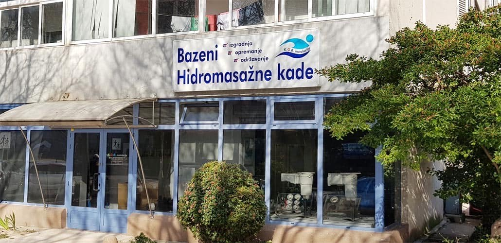